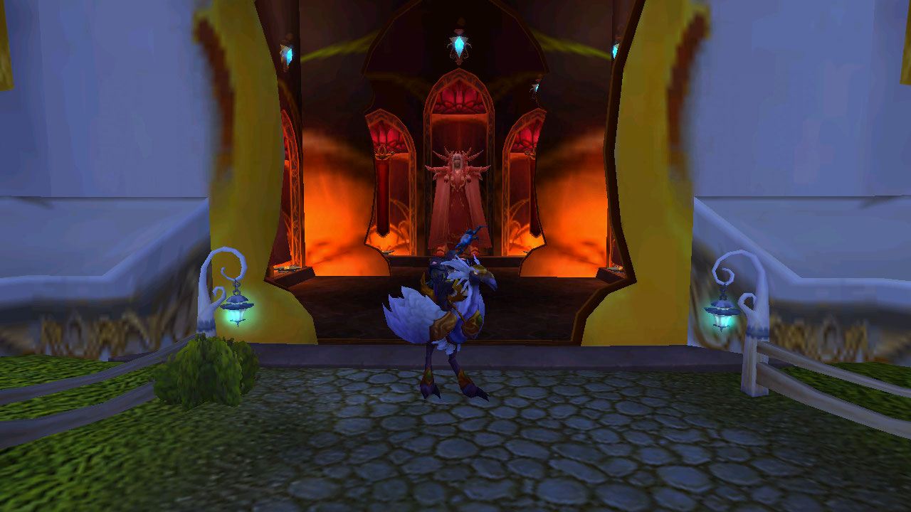

Halcon Zancudo Blanco Presto

Esta montura es dropeada por el rey de los elfos de sangre "Kaelthas" ultimo jefe de la mazmorra "Bancal del magister" ubicada en la Isla de Quel'Danas, debes tomar el portal de Shatt'rah a esta isla para poder acceder. Se puede obtener solamente en la dificultad 5 jugadores heroico. Esta montura es muy parecida a la de los elfos normales, este jefe tambien suele dropear varias cosas muy buenas para una transfiguracion.